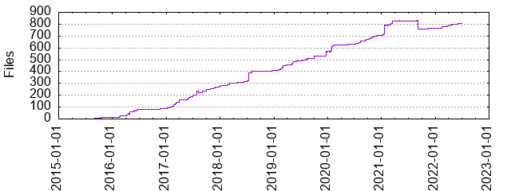

Files
- Total files
- 804
- Total lines
- 32988
- Average file size
- 1905.10 bytes

| Extension | Files (%) | Lines (%) | Lines/file |
|---|
| 171 (21.27%) | 6128 (18.58%) | 35 |
| bazel | 20 (2.49%) | 574 (1.74%) | 28 |
| buildkite | 1 (0.12%) | 1 (0.00%) | 1 |
| bzl | 107 (13.31%) | 9349 (28.34%) | 87 |
| conf | 2 (0.25%) | 16 (0.05%) | 8 |
| dat | 5 (0.62%) | 481 (1.46%) | 96 |
| jar | 14 (1.74%) | 1541 (4.67%) | 110 |
| java | 56 (6.97%) | 3066 (9.29%) | 54 |
| md | 25 (3.11%) | 2380 (7.21%) | 95 |
| patch | 3 (0.37%) | 87 (0.26%) | 29 |
| properties | 1 (0.12%) | 2 (0.01%) | 2 |
| proto | 24 (2.99%) | 299 (0.91%) | 12 |
| py | 2 (0.25%) | 6 (0.02%) | 3 |
| repo | 1 (0.12%) | 7 (0.02%) | 7 |
| scala | 266 (33.08%) | 6678 (20.24%) | 25 |
| sh | 59 (7.34%) | 2902 (8.80%) | 49 |
| sql | 1 (0.12%) | 0 (0.00%) | 0 |
| srcjar | 6 (0.75%) | 3 (0.01%) | 0 |
| template | 1 (0.12%) | 70 (0.21%) | 70 |
| thrift | 23 (2.86%) | 159 (0.48%) | 6 |
| txt | 14 (1.74%) | 574 (1.74%) | 41 |
| xml | 1 (0.12%) | 3 (0.01%) | 3 |
| yml | 1 (0.12%) | 107 (0.32%) | 107 |